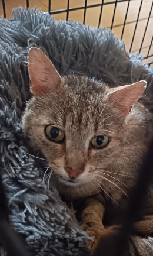
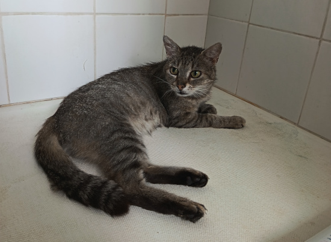
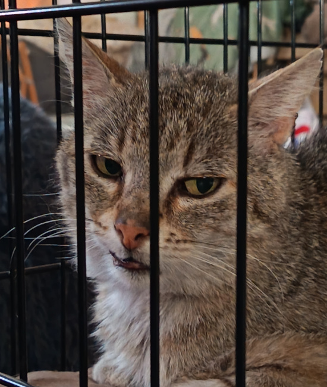
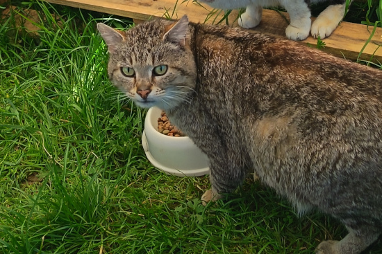

Patapouf
Bonjour!
Moi c'est Patapouf un grand matou de 5 ans et je n'ai plus toutes mes dents! (Il me manque deux crocs et mes incisives). Mais cela ne m'empêche pas de manger loin de là ! Mon début de vie n'est pas glorieux comme bien trop de mes copains.... Mes tatas ne connaissent pas mon début de vie... Elles m'ont trouvé il y a deux ans, je me suis greffé à un groupe de chats qui vivait chez une dame. Malheureusement cette dame est décédée alors les tatas nous ont tous emporté sans en laisser un seul de côté ☺️
J'ai atterri chez tata Emma avec 6 de mes compagnons d'infortune. Mes copains profitaient souvent du fait que je sois gentil pour me voler ma part de nourriture et me poussaient pour avoir des câlins. Preuve que je suis gentil, je n'ai JAMAIS répondu ni à leurs provocations ni à leurs bagarres!
Mes tatas m'ont appelé Patapouf car j'étais un gros et grand chat. C'est donc tout naturellement que tata s'est inquiétée quand elle m'a vu maigrir d'un coup ...
Après une visite chez le docteur le verdict est tombé.... Je suis diabétique et je suis positif au FIV (sida du chat).... J'avais une glycémie de 7 au lieu de 1. Je suis en cours de traitement pour savoir ce qui me convient le mieux et stabiliser mon diabète. J'ai de la chance dans mon malheur je prend mon sirop tout les jours à 9h du matin comme un grand! Je suis aussi rationné à 50g de croquettes par jour pour l'instant. Les docteurs me disent que je pourrais avoir un peu plus dans quelques temps.
Ma vie cabossée m'a laissé un petit traumatisme au niveau de la nourriture. J'ai tellement peur qu'on me vole ou qu'on m'empêche de manger que je mange très vite et je suis frénétique quand je sens de la nourriture. Je panique de peur de manquer mais je n'ai jamais attaqué !
Depuis la découverte de ma maladie je vis dans la maison de tata avec ses chats et son gros chien un peu foufou. Je n'ai absolument pas peur du chien je lui fais même des câlins. Mais quand il est un peu fou, un coup de patte et c'est réglé !
Pour l'instant je vis dans une grande cage, et dans peu de temps je vais rejoindre un compagnon d'infortune (Stitch) qui a aussi le sida dans une chambre. Mais vous en conviendrez ce n'est pas une vie... J'ai besoin d'une famille à moi. Une famille pour toute la vie ou une famille d'accueil relais en attendant. Une famille qui peut avoir chien, enfant, chat s'il est positifs au FIV. Je pourrais vivre avec des chats non positifs mais le risque de bagarre rend un peu risqué la cohabitation.... De par mes maladies je serais un chat d'intérieur OU avec un accès extérieur SÉCURISÉ.
Comme on dit le meilleur pour la fin:
Malgré mes 5 années d'errance, je suis un chat TRÈS câlins, doux affectueux, sage, propre. Tellement gentil que le docteur m'a fait une prise de sang dans le cou et j'ai absolument pas bougé! Je suis ok tout, je ne cherche même pas à sortir de la maison. En soit je suis le chat I-DÉ-AL!
En Résumé
- Mâle
- 01/01/2021
- Ok chien
- Ok chats
- Enclos sécurisé uniquement ou pas de sortie
- 80 euros
Son caractère
- Calme
- Câlin
- Très gourmand
- Besoin d'un temps d'adaptation
Actuellement
- Stérilisé
- Vermifugé et déparasité
- Vacciné
- Testé FIV/FeLV positif
- Diabétique (traitement voie orale)
- Lourdoueix saint Michel


